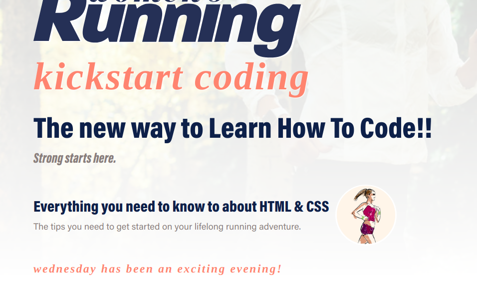

Day 1 of KSC, we learned how to temporarily manipulate HTML tags through a browser by using opening and using the Dev Panel.

Day 2 a class activity that stood out to me was learning how to use CSS styles. So intriguing to see the backend structure and elements go into creating a website and page.

Day 3 we went over Bootstrap - 4 Grid. It is still all new to me, but with practice I will be able to dream about this and have a dreamy, out-of-this world website.

Week 2 came around quick and we learned how to you use the bash command line, how to access GitHub and our intro to Python began.